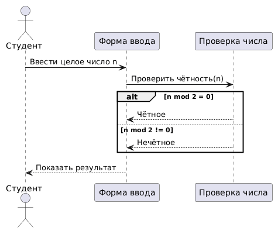

@startuml
skinparam backgroundColor white
skinparam shadowing false
actor Студент as S
participant "Форма ввода" as F
participant "Проверка числа" as P
S -> F: Ввести целое число n
F -> P: Проверить чётность(n)
alt n mod 2 = 0
P --> F: Чётное
else n mod 2 != 0
P --> F: Нечётное
end
F --> S: Показать результат
@enduml